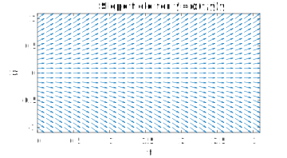
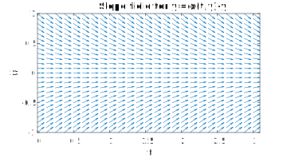
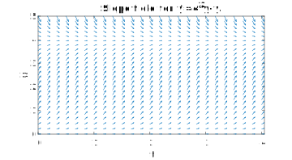
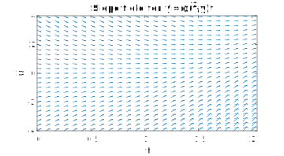
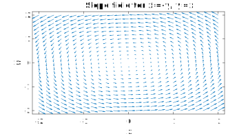
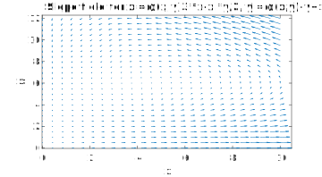

Section 3.1 Slope fields
¶From section 3.1.
In nonlinear problems of the form \(y'=f(y)\text{,}\) we used the idea of a phase-line diagram to get some insight to the behavior of the solution, in particular with regards to the stability of fixed points where \(f(y)=0\text{.}\) For a more general (nonautonomous) equation of the form \(y'=f(t,y)\text{,}\) we can use a two-dimensional form of this picture called a slope field or direction field.
The idea is to choose a section of the \((t,y)\) plane and evaluate \(f(t,y)\) at a grid of points there. At each such point we thus have the value of \(y'\text{,}\) i.e., the slope of the solution. The value is indicated using an arrow or hash mark whose slope shows the direction and whose length shows the magnitude of \(y'\text{.}\)
Here are slope fields drawn by MATLAB (see main site for code).
\begin{equation*}
\dd{y}{t} = y
\end{equation*}
slopefield(@(t,y) y,[0 3],[-1 1])

You clearly see the instability of \(y=0\text{.}\)
\begin{equation*}
\dd{y}{t} = -y
\end{equation*}
slopefield(@(t,y) -y,[0 3],[-1 1])

Now \(y=0\) is stable.
(Logistic)
\begin{equation*}
\dd{y}{t} = 4y-y^2
\end{equation*}
slopefield(@(t,y) 4*y-y.^2,[0 4],[0 5])

The arrows strongly suggest the S-shaped solutions familiar for the logistic equation.
(Time-varying)
\begin{equation*}
\dd{y}{t} = t^2-y
\end{equation*}
slopefield(@(t,y) t.^2-y,[0 2],[-4 4])

There are no longer fixed points/steady states.
A related type of picture emerges from looking at isoclines. An isocline is a curve in the \((t,y)\) plane where \(f(t,y)\) is constant. That is, they are level curves of \(f\text{.}\) Along an isocline, all solution curves have the same slope. The particular case of \(f(t,y)=0\) is a nullcline.
The isoclines in the autonomous case \(y'=f(y)\) are, quite boringly, all horizontal lines.
Let's now make a rather strange-looking shift in how we look at \(dy/dt=f(t,y)\text{.}\) We introduce a new variable \(x(t)\) such that simply \(x(t)=t\text{.}\) This lets us write the pair of equations
\begin{align*}
\dd{y}{t} \amp = f(x,y)\\
\dd{x}{t} \amp = 1\text{.}
\end{align*}
It now becomes interesting to see this as a special case of an autonomous system of two ODEs for two dependent variables:
\begin{align*}
\dd{x}{t} \amp = F(x,y)\\
\dd{y}{t} \amp = G(x,y)\text{.}
\end{align*}
Here we can regard solutions \((x(t),y(t))\) as trajectories or curves in the \((x,y)\) plane, with \(t\) as a parameter rather than an axis in the plot. At any point on one of these curves, the tangent vector is given by
\begin{equation*}
\left[ \dd{x}{t},\dd{y}{t} \right] = \bigl[ F(x,y),G(x,y) \bigr]\text{.}
\end{equation*}
This observation allows us to draw a slope field in the \((x,y)\) plane, even without knowing solutions. A slope field does not give much precise information, but it can give important hints about what to expect.
Example 3.1.2 Slope fields for a system of two equations
Here is a slope field for the linear ODE system
\begin{align*}
\dd{x}{t} \amp = -y\\
\dd{y}{t} \amp = x\text{.}
\end{align*}
F = @(x,y) -y; G = @(x,y) x; slopefield(F,G,[-2 2],[-2 2])

Here is a slope field in the first quadrant for the nonlinear system
\begin{align*}
\dd{x}{t} \amp = 3x - \frac{1}{2}xy\\
\dd{y}{t} \amp = \frac{1}{4}xy - y\text{.}
\end{align*}
F = @(x,y) 3.*x-x.*y/2; G = @(x,y) -y + x.*y/4; slopefield(F,G,[0 10],[0 12])

There is another way to look at the two-equation system \(x'=F(x,y)\text{,}\) \(y'=G(x,y)\text{.}\) If we define a vector-valued function \(\mathbf{u}(t)\) by \(u_1=x,\, u_2=y,\) and we define the vector field \(\mathbf{f}(\mathbf{u})\) with components
\begin{align*}
f_1(\mathbf{u}) \amp = F(u_1,u_2)\\
f_2(\mathbf{u}) \amp = G(u_1,u_2)\text{,}
\end{align*}
then we can express the system as one equation, \(\mathbf{u}'=\mathbf{f}(\mathbf{u})\text{,}\) whose solution is vector-valued in two dimensions. Writing things in this form serves two major purposes: it allows us to generalize quite easily from two dimensions to any number, and it's the form expected by most software for solving ODE systems numerically.